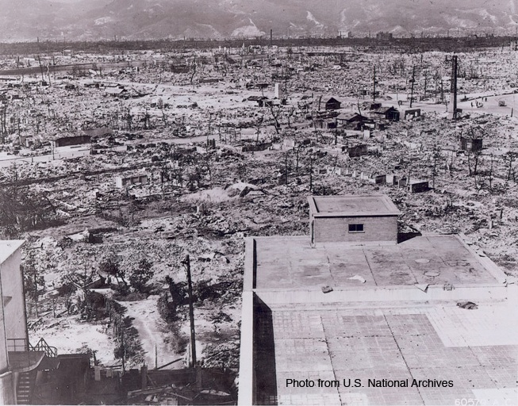

Overview of Nuclear Weaponry
There are two main types of nuclear weapons: fission bombs and fusion bombs. Only fission bombs have been used thus far in warfare, so these will be the focus here. Fission bombs work by forcing a sub-critical mass of an unstable isotope into a super-critical mass through a small explosion. Once a super-critical mass is reached, an errant neutron will split the isotope into two or more stable isotopes. Upon splitting, an enormous amount of energy is released along with more free neutrons. These free neutrons will then split more isotopes and the energy released is amplified. This runaway reaction is contained in the bomb until a set time after which the bomb’s shell is destroyed, allowing the enormous amount of stored energy to be released. It is this energy release that caused the devastation seen in Hiroshima and Nagasaki during World War II (1,2).


Brief History of Hiroshima and Nagasaki Bombings
The first, and to date only nuclear weapons used in combat were dropped by the United States on Hiroshima (August 6, 1945) and Nagasaki (August 9, 1945). Six days after the Nagasaki bombing Japan officially surrendered and World War II ended. The devastation from these attacks was immense, killing 140,000 in Hiroshima and 80,000 in Nagasaki by year’s end. The Japanese had repeatedly refused to sign a peace treaty proposed by the Allies. As an invasion of mainland Japan by Allied forces was imminent and would undoubtedly result in a massive loss of life on both sides, President Truman decided to use a new technology to bring about a quick Japanese surrender. The cities of Hiroshima, Nagasaki, Kyoto, Yokohama, and Kokura were chosen as potential targets, not for their importance to Japanese military function, but for the psychological effects of losing entire cities and being internationally recognized. The gravity bomb “Little Boy” was a gun-type fission bomb with a 60 kg core of uranium-235. The ensuing 13-kiloton blast completely devastated a radius of about 1 mile and set ablaze 4.4 square miles. “Little Boy” was actually extremely inefficient as only 1.38% of its material was fissioned. The Japanese had initially signaled an air raid warning upon learning of the incoming aircraft. However, after it was realized that the incoming squadron was only a few planes, the warning was called off. It was only when Japanese headquarters lost contact with Hiroshima that they flew a reconnaissance squad to the city. The mushroom cloud from the nuclear explosion could be seen even as the plane was 100 miles out from ground zero (1).

The second nuclear attack came three days later. Nagasaki was actually the secondary target, Kokura the primary. However, cloud cover that day did not allow for a visual confirmation of the target and thus the primary target was abandoned. With fuel running low and the cloud cover just as dense over Nagasaki, the secondary strike was also about to be abandoned. However, a small break in the clouds allowed for a visual confirmation of the target and at 11:01 “Fat Man” was dropped. “Fat Man” was a fission bomb with a 6.4 kg core of plutonium-239. The resulting 21-kiloton explosion yielded a blast radius of 1 mile and ensuing fires for 2 miles. The explosion was estimated to produce approximately 7000 °F of heat and 634 mph winds. On August 15th, Japan officially announced its surrender to Allied forces, citing that “Should we continue to fight, not only would it result in an ultimate collapse and obliteration of the Japanese nation, but also it would lead to the total extinction of human civilization.” Truman’s plan succeeded (1).
Health Effects Associated with Nuclear Fallout
There are two main health effects associated with nuclear radiation exposure: acute radiation sickness and long-term carcinogenesis. Acute radiation sickness encompasses all illnesses that are a direct result of radiation exposure. Increasing doses of exposure lead to more severe conditions. Low doses (0.05-2 Sv) will result in nausea and overall fatigue. Moderate doses (2-4 Sv) similarly result in fatigue and nausea, but also cause immune system damage. At this point, even if the individual is able to survive subsequent infection, recovery is rarely complete. High doses (>4 Sv) can lead to massive gastrointestinal tissue damage, resulting in diarrhea, dehydration, and death. A 6 Sv radiation dose results in nearly100% fatality. While these extremely high doses are very harmful in the short-term, even low doses can result in long-term health problems, namely carcinogenesis (3). Refer to the following dosimetric diagrams to determine the gamma ray exposures levels at increasing distances from the epicenter of the explosion (4).


Cancer rates dramatically increase with exposure to gamma radiation from the nuclear weapon detonations in Hiroshima and Nagasaki. The development of cancer is site specific and differs between individuals. Solid cancer rates have been shown to increase in the esophagus, colon, stomach, lung, breast, ovary, and urinary tract (5). For instance, solid cancer rates increased by 35% per Gy of exposure in men and 58% per Gy in women. Overall, women experienced a larger increase in cancer rates than men. Furthermore, the younger an individual was at the time of the atomic blast, the greater the chance of that person developing cancer later in life (6). Rather than actually developing the cancer at an earlier age, those exposed early in life most often developed the cancer at an age normal for the general population. That is, radiation exposure from the atomic blasts increased the chance of developing cancer, but did not speed up the development of that cancer. Thus, it is generally thought that this radiation exposure initiated a general mutation that allowed for subsequent uncontrolled cell division later in life. As such, the devastating effects of the use of nuclear weapons are still being felt decades after the actual attacks.
Resources
The Atomic Bombings of Hiroshima and Nagasaki - A Brief History
The Atomic Bomb- A Study of the Aftermath
The Avalon Project (additional information about the bombings)
References
(1) Atomic Bombings of Hiroshima and Nagasaki
(2) Nuclear Fallout
(4) Maruyama, T., Kumamoto, Y., & Noda, Y. Reassessment of gamma-ray doses in Hiroshima and Nagasaki. J Radiat. Res. Suppl, 40-47 (1991).
(5) Shimizu, Y., Kato, H., & Shull, W. J. Risk of cancer among atomic bomb surviors. J. Radiat. Res. Suppl, 54-63 (1991).
(6) Preston, D. L., Ron, E., Tokuoka, S., Funamoto, S., Nishi, N., Soda, M., Mabuchi, K., & Kodama, K. Solid cancer incidence in atomic bomb survivors: 1958-1998. Radiat. Res. 168 (1), 1-64 (2007).
Author: James Corson
- Alzheimer's 1 2
- Antibiotics
- Antifouling Paint
- Arthritis
- Ayurvedic Medicine
- Breast Feeding
- Cancer Therapy
- Cattle Feed
- Cerebral Ischemia
- Chelation Therapy
- Chernobyl
- Chicken Feed
- Chocolate
- Cigarettes
- Coal 1 2
- Copper Mining
- Cremation
- Diabetes
- Electronic Waste
- Hat Making
- Hard Metal Disease
- Hybrid Cars
- Imaging 1 2 3 4
- Industrial Pollution
- Jewelry Allergy
- Lead Poisoning
- Lewisite
- Magnetic Particles
- Makeup
- Mountain Top Removal
- MRI Imaging
- Neurotoxicity
- Nuclear Power
- Nuclear Weapons
- Ouch Ouch Disease
- Peripheral Neuropathy
- PET Imaging
- Photodynamic Therapy
- Phytoremediation
- Pregnancy
- Radioactivity 1 2
- Seafood
- Sunscreens
- Tattoos
- Vaccines
- Wound Healing